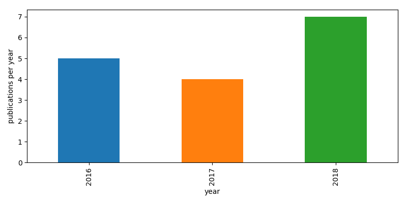

<!DOCTYPE html>
<!--[if IE 7]>
<html class="ie ie7" lang="en-US">
<![endif]-->
<!--[if IE 8]>
<html class="ie ie8" lang="en-US">
<![endif]-->
<!--[if !(IE 7) | !(IE 8)  ]><!-->
<html lang="en-US">
<!--<![endif]-->
<head>
<title>Pseudo Dojo</title>
<meta charset="utf-8"/>
<link rel="stylesheet" href="css/style.css" />
</head>

<body>

<script>
function includeHTML() {
  var z, i, elmnt, file, xhttp;
  /*loop through a collection of all HTML elements:*/
  z = document.getElementsByTagName("*");
  for (i = 0; i < z.length; i++) {
    elmnt = z[i];
    /*search for elements with a certain atrribute:*/
    file = elmnt.getAttribute("w3-include-html");
    if (file) {
      /*make an HTTP request using the attribute value as the file name:*/
      xhttp = new XMLHttpRequest();
      xhttp.onreadystatechange = function() {
        if (this.readyState == 4) {
          if (this.status == 200) {elmnt.innerHTML = this.responseText;}
          if (this.status == 404) {elmnt.innerHTML = "Page not found.";}
          /*remove the attribute, and call this function once more:*/
          elmnt.removeAttribute("w3-include-html");
          includeHTML();
        }
      }
      xhttp.open("GET", file, true);
      xhttp.send();
      /*exit the function:*/
      return;
    }
  }
}
</script>


<div class="wrapper">
<div class="table">
  <aside class="infobox">
    <div class="intro">
      <h1 class="logo"><a href="index.html" title="The Pseudo Dojo">The Pseudo Dojo</a></h1>
    </div>
    <div class="download_button">
     Papers
    </div>
    <div class="menubar">
      <div class="menutext">
        <p>
          <a href="index.html"><span>Home</span></a>
          <a href="faq.html"><span>F.A.Q.</span></a>
          <a href="contribute.html"><span>Contribute</span></a>
          <span style="padding-left: 6em">
          <span><a href="about.html">About</a></span></span>
        </p>
      </div>
    </div>
<lu class="generaltext">

<h1>Publications using PseudoDojo Potentials</h1>
  This page lists the published papers that we know of reporting calculations performed using PseudoDojo
  pseudopotentials. If you have a paper using the pseudopotentials just send us the DOI and we will add it.

<script type="text/javascript" src="https://d1bxh8uas1mnw7.cloudfront.net/assets/embed.js"></script>

<script type="text/javascript" language="javascript">
<!--
// Email obfuscator script 2.1 by Tim Williams, University of Arizona
// Random encryption key feature coded by Andrew Moulden
// This code is freeware provided these four comment lines remain intact
// A wizard to generate this code is at http://www.jottings.com/obfuscator/
{ coded = "gMQzO3HTTHO@igzJj.x1g"
  key = "zj67okD2NfmJyT0UWqbKGrMhV1Y5cEvgASenFuPRsalwdIL8pxCQiXtHO9BZ43"
  shift=coded.length
  link=""
  for (i=0; i<coded.length; i++) {
    if (key.indexOf(coded.charAt(i))==-1) {
      ltr = coded.charAt(i)
      link += (ltr)
    }
    else {     
      ltr = (key.indexOf(coded.charAt(i))-shift+key.length) % key.length
      link += (key.charAt(ltr))
    }
  }
document.write("<a href='mailto:"+link+"'>contact us</a>")
}
//-->
</script><noscript>Sorry, you need Javascript on to email me.</noscript>

<center>
<div> </div>
</center>
<div w3-include-html="papers.html"></div>
</lu>
</aside>
</div>
</div>

<script>
includeHTML();
</script>

</body>
</html>
